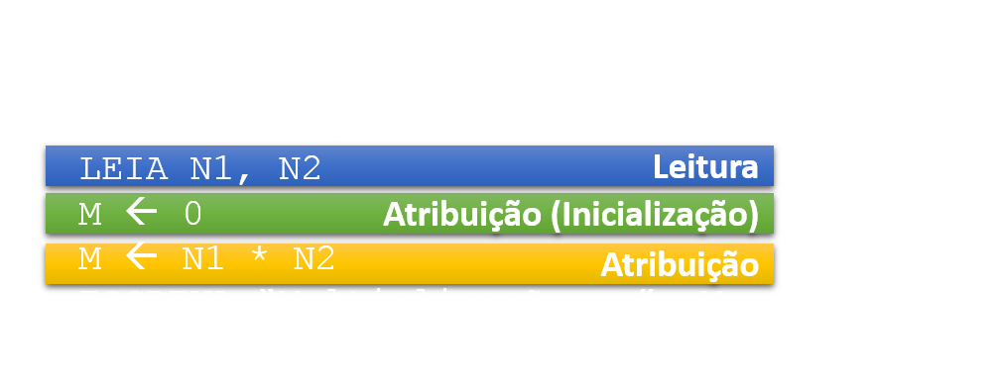

Prof. Dr. Raulcézar Alves
raulcezar@gmail.com
Algoritmo
- Imagine que você está saindo de casa para a faculdade e de repente percebe que o pneu do veículo está furado.
- Trocar um pneu pode ser uma tarefa difícil.
Algoritmo
- Descreva os passos necessários para a troca desse pneu
Algoritmo
- Descreva os passos necessários para a troca desse pneu
- Desparafusar a roda.
- Levantar o carro.
- Remover a roda.
- Colocar o estepe.
- Parafusar a roda.
- Abaixar o carro.
Algoritmo
- Descreva os passos necessários para a troca desse pneu
- Desparafusar a roda.
- Levantar o carro.
- Remover a roda.
- Colocar o estepe.
- Parafusar a roda.
- Abaixar o carro.
Denominamos essa sequência de instruções (passos) de algoritmo.
Algoritmo
- Definições
- "Seqüência básica de instruções que conduzem a solução de um problema."
- "É uma descrição das etapas de resolução de um problema ou a indicação ordenada de uma seqüência de ações bem definidas."
- "O algoritmo é, em sua forma mais simplificada, a maneira mais elementar de se descrever uma lógica."
Algoritmo
Computador não tem senso próprio! Deve receber instruções explícitas (algoritmos).- Um algoritmo correto deve possuir 3 qualidades:
- Cada passo do algoritmo deve ser uma instrução que possa ser realizada.
- A ordem dos passos deve ser precisamente determinada.
- O algoritmo deve ter fim.
Algoritmo
- Método para a construção de algoritmo:
- Compreender completamente o problema a ser resolvido.
- Definir os dados de entrada.
- Definir o processamento (cálculos que serão efetuados).
- Definir os dados de saída.
- Construir o algoritmo utilizando um dos tipos a seguir.
- Testar o algoritmo realizando simulações.
Algoritmo
- Tipos de Algoritmos:
- Descrição Narrativa.
- Fluxograma
- Pseudocódigo ou Portugol
Algoritmo
- Descrição Narrativa
- Consiste em analisar o enunciado do problema e escrever, em uma linguagem natural, os passos a serem seguidos para sua resolução.
- Vantagem: não é necessário nenhum conceito novo, pois a língua já é conhecida.
- Desvantagem: a língua natural abre espaço para várias interpretações, o que dificultará a transcrição do algoritmo para programa.
Algoritmo
- Descrição Narrativa: Exemplo - multiplicar 2 números.
- Passo 1: Receber os dois números que serão multiplicados.
- Passo 2: Multiplicar os números.
- Passo 3: Mostrar o resultado obtido na multiplicação.
Algoritmo
- Fluxograma
- Consiste em analisar o enunciado problema e escrever, utilizando símbolos gráficos predefinidos, os passos a serem seguidos para sua resolução.
- Vantagem: o entendimento de elementos gráficos é mais simples que o entendimento de textos.
- Desvantagem: é necessário aprender a simbologia dos fluxogramas, além disso, o algoritmo resultante não apresenta muitos detalhes, dificultando a transcrição para programa.
Algoritmo
Fluxograma
Algoritmo
Fluxograma: Exemplo - multiplicar 2 números.Algoritmo
- Pseudocódigo ou Portugol
- Consiste em analisar o enunciado problema e escrever, por meio de regras predefinidas, os passos a serem seguidos para sua resolução.
- Vantagem: a passagem do algoritmo para qualquer linguagem de programação é quase imediata, bastando conhecer as palavras reservadas dessa linguagem para sua resolução.
- Desvantagem: é necessário aprender as regras do pseudocódigo.
Algoritmo
Pseudocódigo ou Portugol: Exemplo - multiplicar 2 números.
ALGORITMO
DECLARE N1, N2, M NUMÉRICO
ESCREVA “Digite dois números”
LEIA N1, N2
M ← N1 * N2
ESCREVA “Multiplicação = ”, M
FIM_ALGORITMO
Algoritmo
- Dados
- Valores, informações a serem processadas pelo computador.
- Dados de entrada são aqueles fornecidos através de uma leitura.
- Dados de sáida são aqueles gerados pelo programa.
Algoritmo
- Tipos de Dados
- Números inteiros/reais: 1,2; 2.3 ...
- Valores lógicos: true/false; 1/0 ...
- Valores alfanuméricos: cadeia de caracteres 'ABC#'...
Algoritmo
- Variáveis
- Entidade que armazena dados provisoriamente.
- Devem possuir: nome (rótulo), valor (dado) e tipo.
Algoritmo
- Maneiras de dar valor à uma variável
- Atribuição: próprio progama coloca o valor dentro da variável.
- Leitura: valor dado por uma unidade de entrada (ex: valor digitado pelo usuário).

Algoritmo
- Exercícios
- 1.